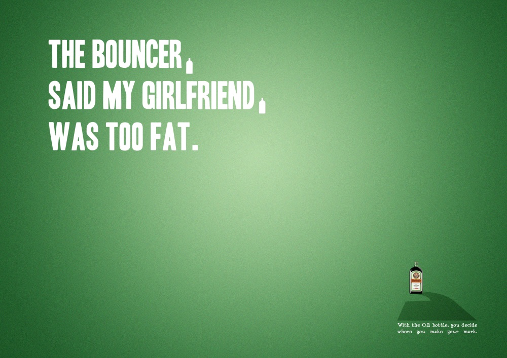
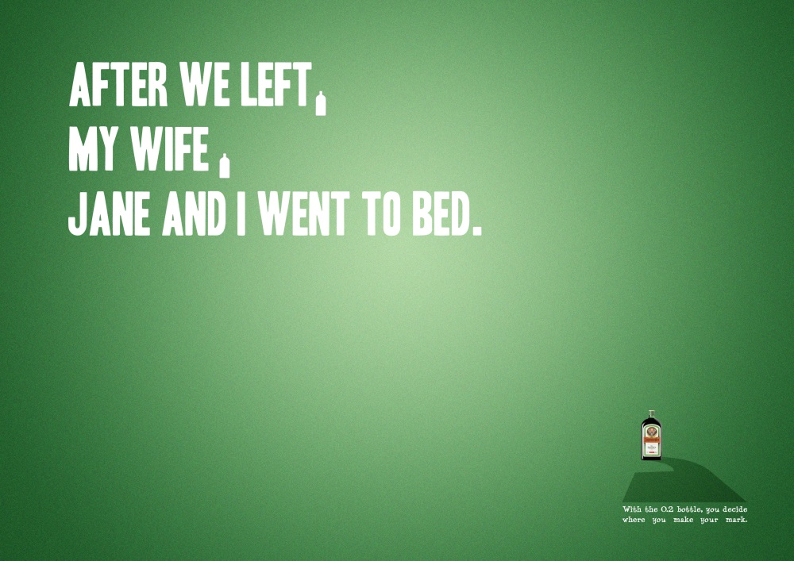
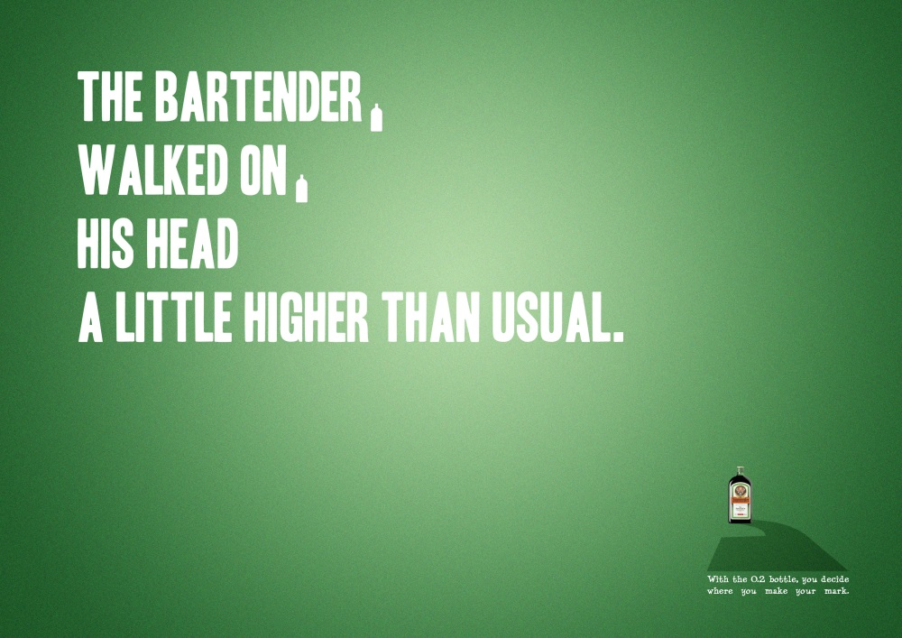

JÄGERMEISTER MAKE YOUR MARK
When deciding on your next drink for the night, timing and location are everything: depending on when and where you choose to have the tiny Jägermeister booster, your night’s whole meaning can change dramatically.
CREDITS: CW - Alex Petrache | AD – Sayalee Kaluskar
Instructors: Robert Mueller / Philipp & Keuntje Hamburg, Germany


